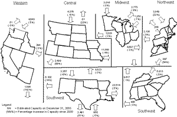

|
About U.S. Natural Gas Pipelines - Transporting Natural
Gas
based on data through 2007/2008 with selected updates |
|||
|---|---|---|---|
|
Overview of Pipeline Utilization Natural gas pipeline companies prefer to operate their systems as close to full capacity as possible to maximize their revenues. However, the average utilization rate (flow relative to design capacity) of a natural gas pipeline system seldom reaches 100%. Factors that contribute to outages include:
Most companies try to schedule maintenance in the summer months when demands on pipeline capacity tend to be lower, but an occasional unanticipated incident may occur that suspends transmission service. Utilization rates below 100% do not necessarily imply that additional capacity is available for use. A pipeline company that primarily serves a seasonal market, for instance, may have a relatively low average utilization rate especially during the summer months. But that does not mean there is unreserved capacity on a long-term basis. On the other hand, during periods of high demand for natural gas transportation services, usage on some portions of a pipeline system may exceed 100% of certificated capacity. Certificated capacity represents a minimum level of service that can be maintained over an extended period of time, and not the maximum throughput capability of a system or segment on any given day. Exceeding 100% of capacity is accomplished by secondary compression and/or line packing, which means that compression is increased, within safety limits, to raise throughput temporarily. Integration of Storage Capacity Integrating storage capacity into the natural gas pipeline network design can increase average-day utilization rates. This integration involves moving not only natural gas currently being produced but natural gas that has been produced earlier and kept in temporary storage facilities. |
Interregional Transmission Pipeline Capacity Levels

click to enlarge
|
||
| Storage is usually integrated into or available to the system at the production and/or consuming end as a means of balancing flow levels throughout the year. Trunklines serving markets with significant storage capacity have greater potential for achieving a high utilization rate because the load moving on these pipelines can be leveled. To the extent that these pipelines serve multiple markets, they also can achieve higher utilization rates because of the load diversity of the markets they serve. Trunklines, which are generally upstream (closer to) the natural gas production fields and storage areas, may sometimes exhibit peak period utilization rates exceeding 100% because they are occasionally capable of handling much larger volumes than indicated by the operational design certificated by FERC. Utilization on the grid systems, which are closer to the consuming market areas and downstream of the storage fields, is more likely to reflect a seasonal load profile of the market being served. The grid-type systems usually operate at lower average utilization levels than trunklines and usually show marked variation between high and low flow levels, reflecting seasonal service and local market characteristics. Measures of Pipeline Utilization There are several ways that natural gas pipeline system utilization may be estimated, as demonstrated in the following cases:
The latter measure is a good indication of how well the design of the system matches current shipper peak-day needs. For example, when a pipeline shows a comparatively low average usage rate (based on annual or monthly data) yet shows a usage rate approaching 100 percent on its peak day, it indicates that the system is called upon and is capable of meeting its shipper's maximum daily needs. Nevertheless, a large spread between average usage rates and peak-day usage rates may indicate opportunities to find better ways to utilize off-peak unused capacity. In some cases, utilization rates exceeding 100 percent may be an artifact of the data that obscures the true operational status of the pipeline. In some instances the sum of individual transportation transactions may exceed pipeline capacity even though physically the pipeline may not be full. For example, suppose a segment from points A to D (with points B and C between A and D) has a capacity of 200 million cubic feet (MMcf) per day. Suppose further that this segment handles a 100 MMcf per day transaction from A to B, a second of 100 MMcf per day from B to C, and a third of 100 MMcf per day from C to D. The pipeline company will report transportation volumes of 300 MMcf per day, even though its capacity is 200 MMcf per day but is only 50 percent utilized on any one segment.
|
|||